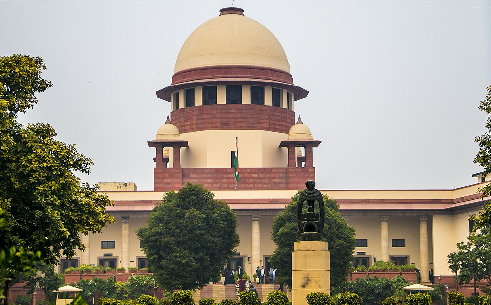

बालबालिकाका लागि पनि इन्टरनेट पहुँच मौलिक अधिकार हो, भारतको सर्वोच्च अदालतको फैसला
अदालतले बालबालिकालाई इन्टरनेटबाट पूर्ण रूपमा रोक्ने प्रतिबन्ध अस्वीकार गर्यो, सुरक्षा र स्वतन्त्रता एकअर्काका विरोधी होइनन् भन्यो, र बाल दुर्व्यवहार सामग्रीका लागि राष्ट्रिय डाटाबेस बनाउन आदेश दियो।

मुख्य बुँदाहरू
- भारतको सर्वोच्च अदालतले इन्टरनेटको पहुँच र प्रयोग हरेक व्यक्तिको मौलिक अधिकार हो, बालबालिका पनि यसमा पर्छन्, र बालबालिकालाई अनलाइन जानबाट पूर्ण रूपमा रोक्नु उनीहरूलाई सुरक्षित राख्ने कानुनी उपाय…
- न्यायाधीश जेबी पारदीवाला र न्यायाधीश के विनोद चन्द्रनको इजलासले अक्टोबर १५ मा जस्ट राइट्स फर चिल्ड्रेन अलायन्स र अर्को विरुद्ध एस.
- इजलासले यो अधिकारलाई जीवन र व्यक्तिगत स्वतन्त्रतासम्बन्धी धारा २१ र वाक स्वतन्त्रतासम्बन्धी धारा १९(१)(क) सँग जोडेर आधार दिएको हो। बालबालिकाको उमेर जति भए पनि उनीहरूका अधिकार उही हुन् भन्ने…
भारतको सर्वोच्च अदालतले इन्टरनेटको पहुँच र प्रयोग हरेक व्यक्तिको मौलिक अधिकार हो, बालबालिका पनि यसमा पर्छन्, र बालबालिकालाई अनलाइन जानबाट पूर्ण रूपमा रोक्नु उनीहरूलाई सुरक्षित राख्ने कानुनी उपाय होइन भन्ने फैसला गरेको छ।
न्यायाधीश जेबी पारदीवाला र न्यायाधीश के विनोद चन्द्रनको इजलासले अक्टोबर १५ मा जस्ट राइट्स फर चिल्ड्रेन अलायन्स र अर्को विरुद्ध एस. हरिश र अन्यको मुद्दामा यो आदेश दिएको हो। यो मुद्दा गैरनाफामूलक संस्था जस्ट राइट्स फर चिल्ड्रेन अलायन्सले ल्याएको थियो। संस्थाले सामाजिक सञ्जाल कम्पनी र अन्य मध्यस्थकर्ताहरूले अदालतको सेप्टेम्बर २०२४ को सोही विषयको फैसलापछि दुई वर्षभन्दा बढी बितिसक्दा पनि बाल यौन शोषण र दुर्व्यवहार सामग्री, जसलाई CSEAM भनिन्छ, पत्ता लगाएर हटाउन अझै असफल रहेको बताएको थियो।
सुरक्षा र स्वतन्त्रता एकअर्काका विरोधी होइनन्
इजलासले यो अधिकारलाई जीवन र व्यक्तिगत स्वतन्त्रतासम्बन्धी धारा २१ र वाक स्वतन्त्रतासम्बन्धी धारा १९(१)(क) सँग जोडेर आधार दिएको हो। बालबालिकाको उमेर जति भए पनि उनीहरूका अधिकार उही हुन् भन्ने अदालतले भन्यो, र उनीहरूलाई इन्टरनेटबाट पूर्ण रूपमा वञ्चित गर्नु भनेको सानो बच्चाको रक्षा गर्न लायक विवेक छैन वा व्यक्त गर्न लायक बोली छैन भन्नु जत्तिकै बेतुका हुने बतायो। बालबालिकाको सुरक्षा र उनीहरूको स्वतन्त्रता एकअर्काका विरोधी होइनन्, अदालतले भन्यो। बालबालिका दुवैका हकदार छन्।
न्यायाधीशहरूले इन्टरनेटलाई विचार र सूचनाको बजार भने। दुर्गम क्षेत्रका धेरै बालबालिकाका लागि यो प्रायः सिकाइ र सूचनाको एक मात्र स्रोत हो, र विशेष आवश्यकता भएका बालबालिकाका लागि यो आफूजस्तै अरूसँग साथ पाउने एक मात्र ठाउँ हुन सक्छ भन्ने उनीहरूले उल्लेख गरे। इजलासले अदालतको सन् २०२० को अनुराधा भासिन विरुद्ध भारत संघको फैसला, जसले इन्टरनेटमार्फत गरिने अभिव्यक्ति र व्यापारलाई सुरक्षा दिएको थियो, र सन् २०२५ को प्रज्ञा प्रसून विरुद्ध भारत संघको फैसला, जसले डिजिटल पहुँचलाई धारा २१ अन्तर्गत मौलिक अधिकार मानेको थियो, लाई आधार बनायो।
प्रतिबन्धले पीडितलाई नै सजाय दिन्छ, अदालतले भन्यो
इन्टरनेट आजको रूपमा बालबालिकाका लागि सुरक्षितबाट धेरै टाढा छ भन्ने इजलासले स्वीकार गर्यो। तर प्लेटफर्महरूले हानिकारक सामग्री पत्ता लगाएर हटाउन नसकेकै कारण बच्चालाई अनलाइनबाट टाढा राख्नु भनेको पीडितलाई नै समस्या ठान्नु हो भन्ने अदालतले भन्यो। दोषीहरू ती हुन् जसले दुर्व्यवहार सामग्री बनाउँछन्, फैलाउँछन्, बेच्छन् वा खोज्छन्, र त्यसलाई नहटाउने मध्यस्थकर्ताहरू हुन् भन्ने अदालतले भन्यो।
बालबालिकाको पहुँचमा लगाइने कुनै पनि पूर्ण प्रतिबन्ध, अदालतका शब्दमा, प्रमाणित असमानुपातिकताका अप्रमाणित उपायबाहेक केही होइन। कुनै पनि देशले यस्ता प्रतिबन्धले बालबालिकालाई सुरक्षित बनाएको देखाउन सकेको छैन भन्ने अदालतले उल्लेख गर्यो। प्रतिबन्धले बालबालिकालाई नियमन नभएका साइटतिर धकेल्न सक्छ, अनलाइनमा कसैले फकाइरहेको वा धम्काइरहेको बच्चालाई आमाबुबालाई भन्न डर लाग्न सक्छ, र हरेक प्रयोगकर्ताको उमेर जाँच्नुपर्ने बनाउन सक्छ, जसमा संवेदनशील डाटाको निरन्तर सङ्कलन जोडिन्छ।
प्रतिबन्ध होइन, बाल मोड
पूर्ण प्रतिबन्ध अस्वीकार गर्नुको अर्थ सुरक्षा उपाय अस्वीकार गर्नु होइन। अदालतले समानुपातिक कदमहरू औंल्यायो: आमाबुबाको बलियो सहमति, मार्गदर्शन र निगरानी, सामाजिक सञ्जाल खाताका लागि छुट्टै बाल मोड, सुरुदेखि नै निजी रहने खाता, अपरिचित वयस्कको सम्पर्क र सन्देशमा सीमा, र बालबालिकाले पुग्न सक्ने विज्ञापन र सामग्रीमा कडा निगरानी। यी कदमहरू किशोरावस्थाअघिका बालबालिकामा लागू हुन सक्ने, आमाबुबाको सहमति जाँच्ने व्यावहारिक तरिकासहित, सुझाव दिँदै अदालतले विवरण केन्द्र सरकारलाई छोड्यो। वयस्क सामग्री साइटजस्ता बालबालिकाका लागि स्वभावैले हानिकारक सामग्री वा सेवाका वर्गहरूबाट बालबालिकालाई रोक्न सरकारलाई यो आदेशले केहीले पनि रोक्दैन।
दुर्व्यवहार सामग्रीका लागि राष्ट्रिय डाटाबेस
आदेशले सरकार र प्लेटफर्महरूलाई काम पनि तोकेको छ। केन्द्रले मध्यस्थकर्ताहरूले CSEAM पत्ता लगाउन र हटाउन प्रयोग गर्ने प्रविधि खुलाउने शपथपत्र बुझाउनुपर्छ, र ठूला सामाजिक सञ्जाल मध्यस्थकर्ताहरूका लागि ह्यास मिलान र ठेगाना सूचीबारे निर्देशिका बनाउनुपर्छ। केन्द्रले प्रमाणित दुर्व्यवहार सामग्रीका लागि राष्ट्रिय ह्यास र ठेगाना सूची डाटाबेस बनाउनुपर्छ। सामग्री सूचीमा पर्नुअघि धेरै तहको जाँचबाट जानुपर्छ, अन्तिम मूल्याङ्कन कम्तीमा तीन जना तालिमप्राप्त मानव विश्लेषकले स्वतन्त्र रूपमा गर्नुपर्छ। सामग्री पुष्टि भएर सूचीमा परेपछि मध्यस्थकर्ताहरूले आफ्नो तर्फबाट नयाँ जाँच नगरी त्यससँग मिल्ने सबै कुरा तुरुन्त बन्द गरेर हटाउनुपर्छ।
प्लेटफर्महरूले आफ्ना गुनासो अधिकारीको विवरण स्पष्ट देखाउनुपर्छ र उजुरी दुई कदममा पुग्ने बनाउनुपर्छ, तालिमप्राप्त अधिकारीले गुनासोमाथि अन्तिम निर्णय लिनुपर्छ। अदालतले केन्द्रलाई असफलताको गम्भीरता, दोहोरिने अवस्था र कम्पनीको आकार र कारोबारअनुसार ठूलो जरिवाना सोच्न भन्यो, र भुक्तानी पर्खालभित्र बेचिने दुर्व्यवहार वा प्रतिबन्धित सामग्रीबाट कमाएको पैसा जफत हुनुपर्ने बतायो। डिजिटल सुरक्षा र उमेरअनुसारको यौन शिक्षा मूल विद्यालय पाठ्यक्रममा सामेल गर्न पनि अदालतले आदेश दियो, जुन NCERT र राज्य परिषद्हरूले विज्ञको सहयोगमा तयार गर्नेछन्, जसमा सहमति, सुरक्षित र असुरक्षित स्पर्श, अनलाइन शोषण र डरबिना दुर्व्यवहार कसरी उजुरी गर्ने भन्ने विषय हुनेछन्। शिक्षकलाई तालिम दिनुपर्छ, आमाबुबालाई नियमित जानकारी कार्यक्रम दिनुपर्छ, र पीडितलाई आवश्यक समयसम्म निःशुल्क परामर्श र मनोवैज्ञानिक सहयोग दिनुपर्छ।
महान्यायाधिवक्ता तुषार मेहता केन्द्रका तर्फबाट उपस्थित भए। सरकारले कार्यान्वयनका कदम चाल्नुपर्छ र डिसेम्बर १० को अर्को सुनुवाइअघि प्रगति शपथपत्र बुझाउनुपर्छ।
स्रोतहरू
लाइभ ल, बार एन्ड बेन्च र ल ट्रेन्डले आदेश र त्यसका निर्देशनहरू पूर्ण रूपमा रिपोर्ट गरे।
समयरेखा
- Sep 2024सर्वोच्च अदालतले अनलाइन बाल यौन शोषण र दुर्व्यवहार सामग्रीबारे आफ्नो अघिल्लो फैसला दिन्छ। जस्ट राइट्स फर चिल्ड्रेन अलायन्सले पछि मध्यस्थकर्ताहरूले त्यसको पालनामा थोरै मात्र प्रगति गरेको बताउँछ।
- Oct 15, 2026न्यायाधीश जेबी पारदीवाला र न्यायाधीश के विनोद चन्द्रनको इजलासले इन्टरनेटको पहुँच र प्रयोग बालबालिकासहित हरेक व्यक्तिको मौलिक अधिकार हो भन्ने ठहर गर्छ, र बालबालिकालाई अनलाइन जानबाट पूर्ण रूपमा रोक्ने प्रतिबन्ध अस्वीकार गर्छ।
- Dec 10, 2026मुद्दाको अर्को सुनुवाइ। केन्द्रले यो मितिअघि कार्यान्वयनका कदम चालेर प्रगति शपथपत्र बुझाउनुपर्छ।
स्रोतहरू
- Live Law: Right to Access and Use Internet a Fundamental Right of Every Individual Including Children, Supreme Court
- Bar and Bench: Children too have fundamental right to access internet, can't deny it citing online harm, Supreme Court
- Law Trend: Right to Access and Use Internet is Fundamental Right of Every Individual Including Children, Supreme Court
- Verdictum: All Individuals Including Children Have Fundamental Right to Access Internet, Supreme Court Disapproves Blanket Restrictions